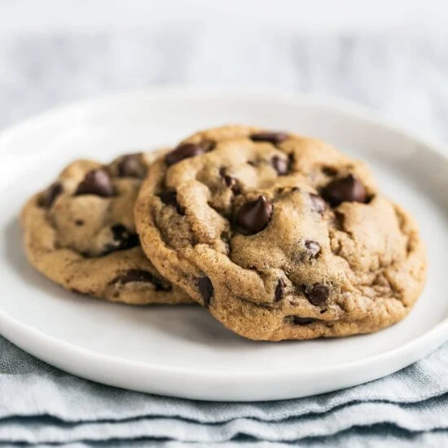

Chocolate Chip Cookies

Description
Yields: 48 cookies
Prep time: 60-90 minutes, spread out over 2-4 days
Cook time: 13 minutes
Nothing beats classic chocolate chip cookies fresh from the oven! Spread these out over however many baking sessions you'd like - the balls of dough will last awhile in the freezer (or be a tasty, non-FDA-approved treat on their own).
Ingredients
- 2 sticks butter, room temperature
- 1 cup (192g) white sugar
- 1 cup (192g) brown sugar
- 2 eggs
- 2 tsp (10g) vanilla extract
- 1 tsp (5g) baking soda
- 1/2 tsp (3g) Morton salt
- 400g (2-1/8 cup) flour
- 10oz (340g) chocolate chips
Steps
Making the dough
- In large mixing bowl, cream together butter, white sugar, and brown sugar until smooth and no clumps of butter remain.
- Beat in eggs 1 at a time, then stir in vanilla.
- In separate bowl, whisk together flour, baking soda, and salt.
- Slowly add dry ingredients to wet. The less added at a time, the easier this will be.
- Cover with plastic wrap, pressing wrap up to dough to remove as much air as possible.
- Refrigerate for 24 to 72 hours.
- Spoon out 48 equal sized (29g) cookies onto parchment lined baking sheet, cover with plastic wrap, and freeze.
- Transfer frozen portions to gallon ziploc bag and freeze.
Baking the dough
- Preheat oven to 325.
- Place cookies on parchment lined baking sheet and cook on upper rack for 13 minutes.
- Transfer to cooling rack and let cool for 5 minutes.
Return to home